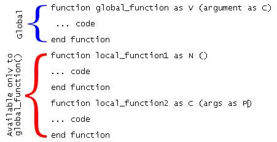

User Defined Functions
While Xbasic offers many powerful functions, it is also possible to define and use functions of your own. Alpha Five lets you create two different kinds of user-defined functions. A local user defined function can be called from anywhere within the script in which it is declared. A global (or public) user defined function can be used anywhere in Alpha Five, including in expressions for calculated fields on forms, and indexes.
For more information on local user-defined functions, see the FUNCTION statement description.
 Note : Function names
should begin with a letter (A-Z, a-z) and may contain numbers and underscore
(_) characters. Although the use of the period (.) character is not prohibited,
it may not be supported in future releases of Alpha Five.
Note : Function names
should begin with a letter (A-Z, a-z) and may contain numbers and underscore
(_) characters. Although the use of the period (.) character is not prohibited,
it may not be supported in future releases of Alpha Five.
Alpha Five allows you to create global functions (also called User Defined Functions (UDFs) in some languages). Alpha Five comes with many built in functions, such as TRIM(), SUBSTR()etc. These functions can be used in any Alpha Five expression. For example, a calculated field might be defined with this expression. Trim(firstname) + " " + lastname.
Global Functions allow you to define your own functions, which can be used in Alpha Five expressions just like the built in Alpha Five functions. Global Functions are written in Xbasic. Here is an example of a simple Global Function:
|
function fullname as C (first as C, last as C) fullname = trim(first) + " " + last end function |
To use this Global Function in an expression (assuming that the first name field was called FN and that the last name field was called LN ), you would type:
|
fullname(fn, ln) |
How to Define a Global Function
To define a global function, select the Code tab on the Control Panel and click the New button. Check Function on the New Object dialog box. In the next dialog box, specify the function name, the data type that the function returns, and the operands that the function accepts. You can also define functions with optional operands. For each operand, you must specify the type. When you press the OK button, Alpha Five displays the script editor with a code skeleton filled in describing the function.
For example, assume you defined a function called shipping_charge as a numeric function, with the following operands:
|
Variable |
Type |
|
state |
character |
|
weight |
numeric |
Alpha Five will create the following Xbasic skeleton for you in the Scripts tab of the Code Editor :
|
function shipping_charge as N (state as C, weight as N) 'type your code here end function |
You will then need to enter the Xbasic code that defines this Global Function where the comment "type your code here" appears. To have the function return a value, assign the value to the function name in the Xbasic code. For example:
|
order_total = order_amount + shipping_charge("NY", 3.5) function shipping_charge as N (state as C, weight as N) 'type your code here if (state = "MA") Then shipping_charge = 0 else shipping_charge = weight * 2.5 end if end function |
See the description of the FUNCTION command statement for more information on creating Global Functions, including information on how to define functions with optional operands.
If you want to make a parameter optional, provide a default value in the function definition. For example the following function sets the default value of state to "MA":
|
function shipping_charge as N ( order_total as N, state = "MA", weight as N) 'type your code here if (state = "MA") Then shipping_charge = 0 else shipping_charge = weight * 2.5 end if end function |
 Note : If you want
to assign a NULL value to an optional parameter, you may use the NULL_VALUE()
function. For example: FUNCTION ImALittleFunction as L
( EquipmentNum as C, tablePointer = NULL_VALUE()).
Note : If you want
to assign a NULL value to an optional parameter, you may use the NULL_VALUE()
function. For example: FUNCTION ImALittleFunction as L
( EquipmentNum as C, tablePointer = NULL_VALUE()).
If a function receives an optional pointer parameter, you can test whether you have received a value by using the TYPEOF() function. It will return "Z" for a NULL value.
|
function myfunc as l (optional_pointer = null_value() as p) if typeof(optional_pointer) = "Z" then |
You can use the global functions that you define in one database in another database. For example, while using a database called Invoice, you might have created the following global functions: FULLNAME(), INVOICE_TOTAL(), and SHIPPING_CHARGE(). Assume that you are now working in another database, called Inventory, for example, and you want to have access to the Global Functions that were defined for the Invoice database. To access these global functions, you can attach the library from the Invoice database to the Inventory database.
To attach an external library:
Give focus to the Control Panel.
Select File > Database properties.
Select the Libraries tab.
Add the new library.
Restriction on the Use of Global Functions
Global functions can be used anywhere in Alpha Five where expressions are allowed. However, there are restrictions on the Xbasic code that the global function executes. For example, you might have defined a global function named OpenForm() that opens a form. You could use this global function in a push event for a button on a form, but you could not use this global functions in an index expression.
Multiple Functions in a Single Script
You may have multiple functions in a single script. However, only the function that shares the script name will be externally available. Consider the following script named global_function. Scripts through-out the application may call global_function, but only global_function may call local_function1() and local_function2().

See Also
Parameters that Can be Passed to Global Functions, Global Scripts, Passing Variables by Reference, Defining a Function with Optional Pointer Variables